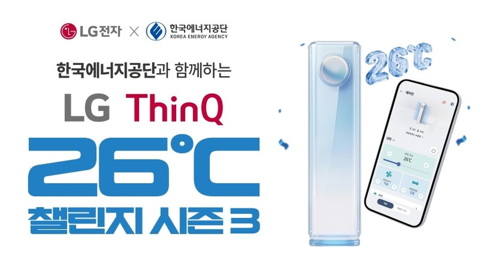
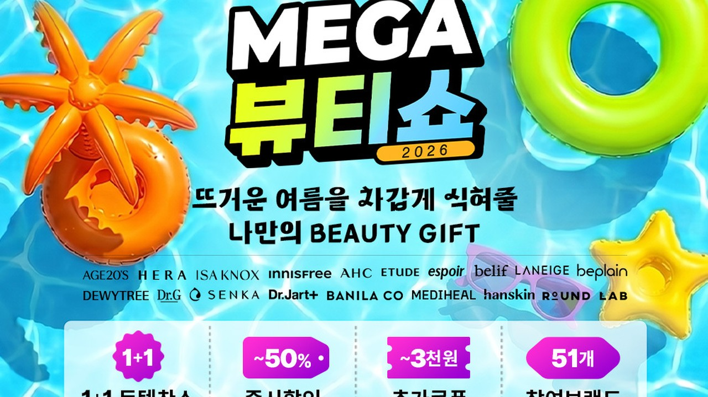
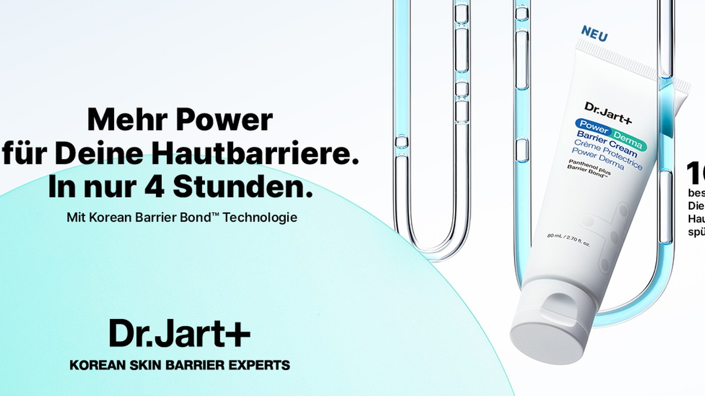
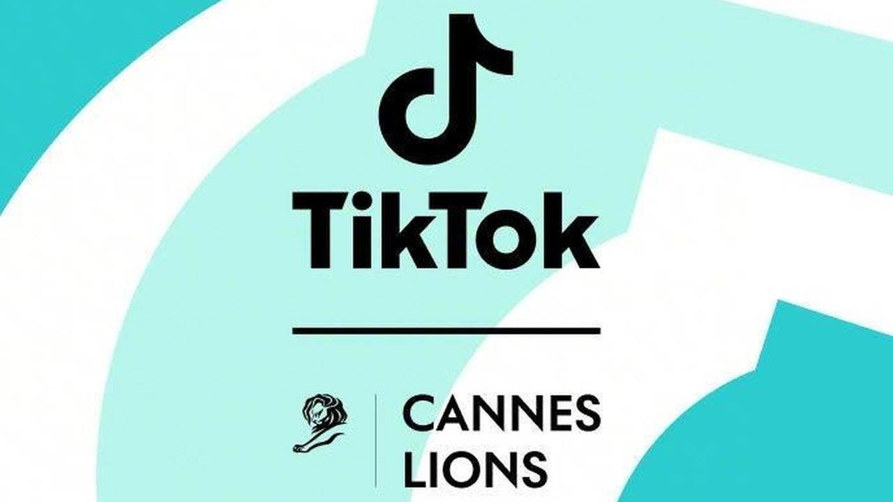
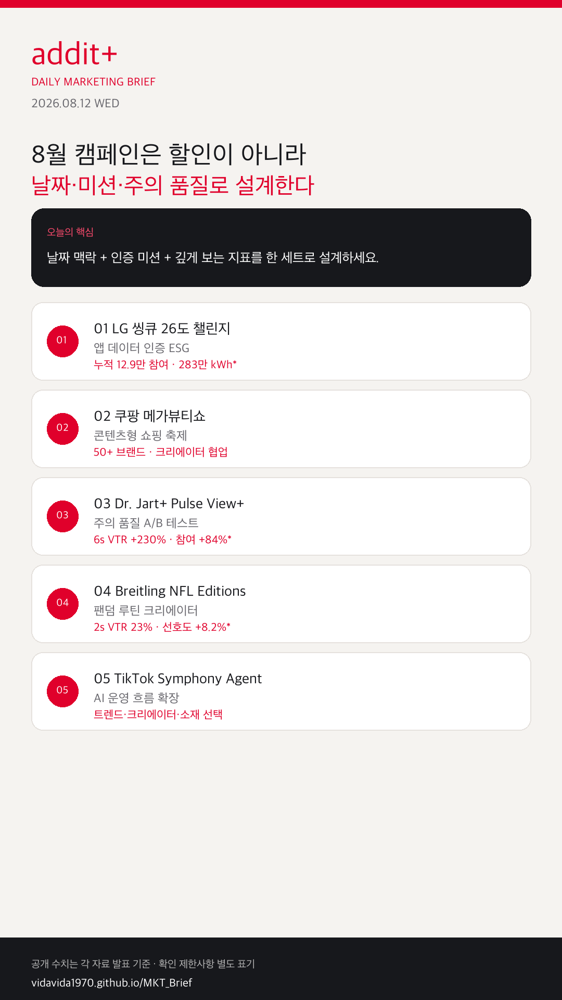

01
날짜형 캠페인이 여름 할인을 대체한다
말복·광복절 연휴·에너지의 날·처서처럼 일정이 명확한 키워드가 소재와 매체 예약을 역산하게 만듭니다.
날짜 기반 소비 맥락, 앱 데이터 인증형 ESG, 콘텐츠형 쇼핑 축제, 숏폼 주의 품질 지표, AI 운영 도구가 한 세트로 움직이고 있습니다.
말복·광복절 연휴·에너지의 날·처서처럼 일정이 명확한 키워드가 소재와 매체 예약을 역산하게 만듭니다.
수행 조건 자동 확인과 누적 기여량 리포팅이 캠페인 성과를 만듭니다.
할인·크리에이터·오프라인 체험·사은품이 하나의 퍼널로 묶입니다.
6초 VTR, 완료율, 참여율, 브랜드 리프트가 핵심 지표가 됩니다.
트렌드 탐색·크리에이터 발굴·브리프·소재 선택이 자동화될수록 승인 기준이 중요해집니다.

KOREA희망온도 26도 이상, 최소 10시간 사용을 LG 씽큐 앱이 자동 확인합니다. 지난 2년 누적 약 12.9만 명 참여, 약 283만 kWh 절감이 공개됐고 시즌3는 8월 말까지 이어집니다.

KOREA50여 개 브랜드, 주차별 테마, 뷰티 크리에이터 협업 영상/릴스, BOF 사전 홍보 부스를 결합했습니다. BOF 부스 1만 명 이상 방문 등 사전 모멘텀이 공개됐습니다.

GLOBAL독일 Power Derma 론칭에서 크리에이터 소재와 Pulse View+를 결합해 대조군 대비 6초 VTR +230%, 참여율 +84%, 완료율 +121%를 공개했습니다.
크리에이터 4명 협업, Spark Ads, ESPN 프리미엄 지면에 리프트 스터디를 결합했습니다. 2초 VTR 23%, CTR 0.6%, 구매 의향 +5.2%, 선호도 +8.2%가 공개됐습니다.

PLATFORMCannes Lions 2026에서 Creative Studio, Content Suite, TikTok One에 Symphony Agent 적용이 발표됐습니다. 자동화될수록 금지 표현·근거·승인 기준이 더 중요해집니다.
말복·광복절·에너지의 날·처서를 EAT/BUY/DO/PLAY 키워드로 먼저 고정합니다.
나스미디어 캘린더 →사전 오프라인 노출 → QR/티저 → 크리에이터 추천 → 주차별 상품군 흐름을 참고합니다.
BOF 사전 홍보 보기 →
8월 캠페인은 할인 문구보다 날짜 맥락, 인증 가능한 미션, 깊게 보게 만드는 지표를 한 세트로 설계할 때 설득력이 생깁니다.
{kind=link}